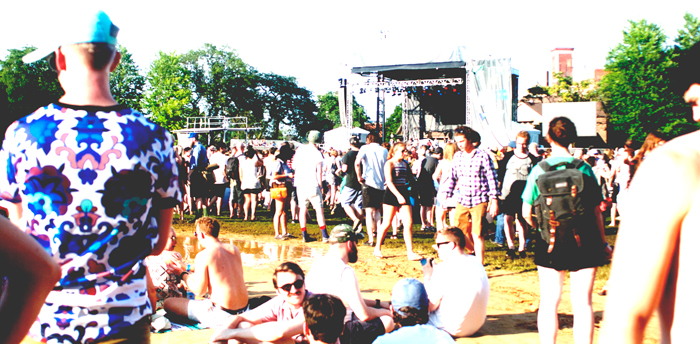

Pitchfork Day Two
So scratch what we said in part one about Chicago weather finally being summer like. Tuesday saw some Seattle-like weather as festival goers got soaked and rained out for a portion of the festival during the Future Island set. When attendees were permitted back onto the grounds, they walked into Woodstock conditions. Collectively everyone was soaking wet, had mud to their calves, and their white shoes thoroughly stained, why anyone would wear white shoes to a music festival baffles me.

The performances missed during the rain hiatus were cancelled, and acts like Kurt Vile were forced to start 25 minutes late. This didn’t stop A$AP Ferg from showing up 2 minutes late for his set, and going over his time, thus pushing back late performers Shamir back. Nor did this stop the crowd from conserving all that hype for him. It was a wet, sweat filled, ravenous, young drunk and drugged mob, grinding on each other and moshing. People were dancing in trees. I spoke with a girl who left her friends in the center of the action for the outskirts because it was “just too crazy in there.” Then someone picked up a recycling bin and crowd surfed it, and upturned it, showering the crowd with used water bottles and other dirty papers and plastics, giving a whole new definition of making it rain. At least it was a recycling bin.

The Blue Stage was like that for the rest of the evening. Shamir started about a half hour late, which made the already rowdy crowd a bit antsy, but all was forgotten when the sweet, sassy, and soulful Shamir took the stage. His soft spoken voice was such a contrast to his booming singing voice. He had three very stylish backup singers with him on stage. He performed barefoot and let down his chiffon midway through and had the crowd singing “you, you, you” in unison as they disco boogied. Of course the most popular song of the evening was “On The Regular,” but the most poignant was "Darker," where Shamir came to the speaker at the edge of the stage and sat the glow of the smoky wind on his face. “Think of someone you love right now and have lost during this song,” he said angelically. But a true bad ass at heart, he jumped into the crowd to close out his set and crowd surfed while lighting up a cigarette.
(Towkio)
After the Shamir set, the stage crew made the announcement that SOPHIE was having travel troubles due to the inclement weather and was unable to attend, but that there would be a “special guest.” Crowd speculation was silenced when Towkio, part of Vic Mensa’s SAVEMONEY crew came onto stage. The audience went bananas, on a level higher than A$AP, and Towkio gave a high energy performance. He was all over the stage, the sweat dripping from his face, water spraying the crowd, and SAVEMONEY touting. The perfect hype man for Mensa, yet a stand alone act in his own. He told the crowd “we used to hop the fence to come to this festival.” He closed out his set with “Heaven Only Knows.”
(Vic Mensa)
Vic Mensa, who had just performed the night before to an at capacity after party the night before at the new Virgin Hotel downtown’s rooftop lounge Cerisse. That was just a warm up for Mensa. He emerged onto an darkly lit stage in an all white outfit with words like “Kill the Trump” and other politico - very Kanye-like considering he was recently taken under the rapper’s wing. He played a mixture of high energy crowd favorites mixed with introspective slower songs and commentary alluding to his new vibe for his upcoming album Traffic. He spoke about Chicago violence, and how coming together in spaces like these celebrate the good. To close out his set he brought out all of his SAVEMONEY family on stage in a raucous fashion, the entire VIP section, mostly consisting of homies and closed out the night with a stage party to “U Mad.”
Meanwhile Sleater-Kinney was a whole nother world compared to the boisterous Blue Stage. The all girl rock group who had just reunited performed in front of a beautiful magenta backdrop that flowed in the wind. This was a part of their first tour together in 10 years. It was all girl power and they were in no way rusty after their time apart.
Shamir "On The Regular"
For more pictures from Pitchfork check out our Facebook album here.
photo credits: ciera mckissick
(masthead photo: shamir)